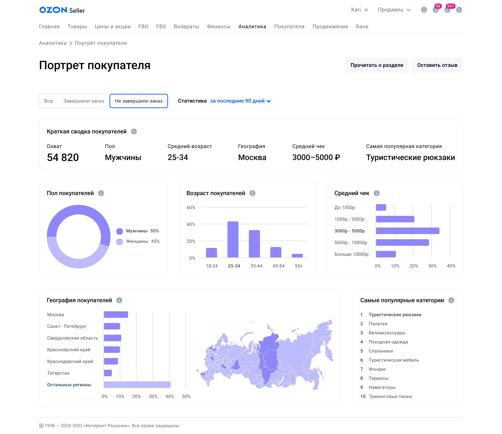

www.ncocu.space

Интерфейс «Портрет покупателя» для Ozon Product Challenge
Проектирование интерфейса «Портрет покупателя», который поможет анализировать аудиторию и принимать решения по развитию бизнеса и продвижению товаров.
♡ Мое решение попало в финал, я обсуждала его вместе с дизайн лидами ozon
♡ Мое решение попало в финал, я обсуждала его вместе с дизайн лидами ozon
Роль
Продуктовый дизайнер
Тип проекта
Конкурсная работа
Год
2026
Инструменты
Figma
Контекст
«Портрет покупателя» — это раздел аналитики в личном кабинете продавца Ozon. Он помогает понять, кто покупает товары: пол, возраст, географию, средний чек и интересы аудитории. Эти данные помогают лучше понимать своих покупателей, развивать ассортимент и планировать рекламные кампании. Страница отображает статистику для выбранного сегмента покупателей
Задача
Спроектируйте интерфейс страницы «Портрет покупателя» для веб-версии личного кабинета продавца. На странице необходимо отобразить: охват аудитории, распределение покупателей по полу и возрасту, географию покупателей, распределение по среднему чеку, наиболее популярные категории товаров
Цели бизнеса
♡ Раскрыть метрики благодаря которым продавцы могут понять и усовершенствовать подход к продажам и развитию своего магазина, тем самым подняв свою прибыль и прибыль маркетплейса
♡ Новый интерфейс может заинтересовать новых продавцов перейти в озон, стимулировать активнее использовать внутреннюю аналитику вместо посторонних сервисов, также повысить ценность личного кабинета продавца и воспользоваться рекламными интсрументами
♡ Новый интерфейс может заинтересовать новых продавцов перейти в озон, стимулировать активнее использовать внутреннюю аналитику вместо посторонних сервисов, также повысить ценность личного кабинета продавца и воспользоваться рекламными интсрументами
Сегменты пользователей
♡ Самый большой, более 60% это индивидуальный предприниматель
♡ Небольшой бренд и Средний или крупный магазин
♡ Небольшой бренд и Средний или крупный магазин
Миссия для пользователя
Сократить путь от данных к действию, из цифр показать историю о покупателях, благодаря которой продавец сможет быстро сориентироваться и сделать план по развитию магазина и росту продаж
Идеи и гипотезы
♡ Уровень подготовки у пользователей разный, поэтому интерфейс должен быть понятен как начинающему продавцу, так и опытному специалисту
♡ Интерфейс должен максимально облегчать интерпретацию данных
♡ Лучше использовать визуальные способы представления информации там, где это помогает быстрее считывать данные
♡ Интерфейс должен максимально облегчать интерпретацию данных
♡ Лучше использовать визуальные способы представления информации там, где это помогает быстрее считывать данные
Конкуренты
При анализе конкурентов я вспомнила о Яндекс метриках, я сама часто пользовалась ими и знаю где у них хорошие решения и слабые. Самой запомнящийся функцией оказалась краткая сводка данных. С помощью неё можно быстро ознакомится с самыми важными данными, а так же сравнить их с другим периодом не высматривая каждый показатель в графике
Варфрейм
Делая варфрейм я понимала систему отступов озон селлер и как примерно можно расположить необходимые данные
Мое решение
При проектировании интерфейсов в уже существующих системах я переиспользую уже существующие решения, потому что
♡ Я точно знаю что оно работает
♡ Пользователь уже знаком с функцией и сложностей у него не возникнет
♡ Я точно знаю что оно работает
♡ Пользователь уже знаком с функцией и сложностей у него не возникнет

В географии я представила самое заметное решение это векторная карта россии с выделенными регионами. Многие могут не знать где именно расположен тот или иной регион. Я считаю что она поможет продавцу углубится в нишу своих покупателей, увидеть их месторасположение на карте, узнать их климатические нюансы, понять их боли при выстраивании маркетингового плана. К примеру при не выкупе товара из более северных регионов сделать позиционирование термосов, что они выдерживают тепло в -30 градусов. Также продавец может распологать свой товар ближе к точкам на карте, ожидание тоже важный пункт к покупке товара
Больше о том как я делала интерфейс в фигме
Мобильная версия
При переносе на мобильную версию я нашла в интернете скриншот и опиралась на него, здесь также выделен охват, а карты россии нет, потому что она плохо помещается в мобильную версию и выглядит мелкой
Юзабилити тестирование
Проверка, насколько понятна структура аналитического интерфейса и помогает ли представление данных быстро перейти от наблюдения за показателями к формированию гипотез для развития бизнеса и маркетинга
Задача участников
Сформировать хотя бы одну гипотезу для развития бизнеса и маркетинга
Участники
♡ 4 человека без знаний о маркетинге и продажах
♡ 3 человека продающие товары на вб
Результат
Участникам без знаний о маркетинге и продажах потребовалось около 8 минут, чтобы перейти от изучения отдельных показателей к формулированию первых гипотез. При этом участники смогли самостоятельно интерпретировать данные и сформулировать направления для дальнейших действий
Участники с опытом работы на маркетплейсах быстро ориентировались в структуре страницы. В среднем первые гипотезы по улучшению маркетинга появлялись примерно через 5 минут после начала работы с интерфейсом
Вывод
Знания о маркетинге и продажах приобретенные ранее существенно влияют на скорость интерпретации аналитики. Пользователям без опыта нужен дополнительный контекст, обучение, чтобы быстрее связывать данные с возможными действиями
Что бы я сделала в следующих итерациях
♡ Добавила бы поясняющих, обучающих блоков, чтобы продавцы без базы знаний о маркетинге смогли углубится в понимание своего покупателя для начинающих продавцов
♡ Сравнительная характеристика между периодами, на месте продавца хотела бы знать, мои решения приносят плоды или иду по не правильному курсу
60 fps